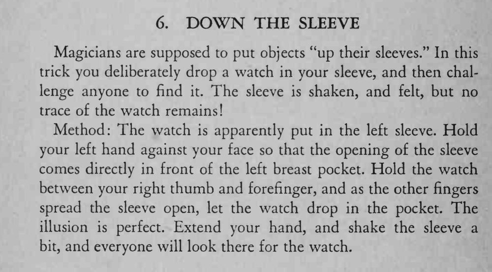

怀表被丢进左袖，袖子被抖动、摸索，里面却什么也没有。
袖口要对准胸袋口，放表的动作要像真的往里丢一样自然。

Magicians are supposed to put objects "up their sleeves." In this trick you deliberately drop a watch in your sleeve, and then challenge anyone to find it. The sleeve is shaken, and felt, but no trace of the watch remains! Method: The watch is apparently put in the left sleeve. Hold your left hand against your face so that the opening of the sleeve comes directly in front of the left breast pocket. Hold the watch between your right thumb and forefinger, and as the other fingers spread the sleeve open, let the watch drop in the pocket. The illusion is perfect. Extend your hand, and shake the sleeve a bit, and everyone will look there for the watch.